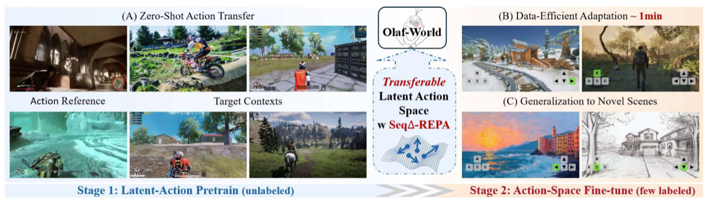

Why it matters왜 중요한가
Action-controllable world models are bottlenecked by action labels — and the labels-free shortcut (latent actions) silently breaks across scenes.
행동 제어형 월드 모델의 병목은 행동 라벨 — 그런데 라벨 없는 우회로(잠재 행동)는 장면이 바뀌면 조용히 무너진다.
Video generative models hold rich priors about dynamics, but turning them into controllable simulators normally needs frame-aligned action labels that are costly and domain-tied. Latent action learning discovers a control space from unlabeled video — yet because training is isolated to each clip, the latent space is identified only up to a clip-specific basis. There is no shared coordinate system, so identical action semantics need not land in the same region of latent space. Olaf-World's insight is simple but sharp: actions are unobserved, but their semantic effects are observable in the video itself, so the effect can serve as a global anchor that ties action meaning across contexts.
비디오 생성 모델은 동역학에 대한 풍부한 사전지식을 갖지만, 이를 제어 가능한 시뮬레이터로 바꾸려면 보통 프레임 정렬된 행동 라벨이 필요하고 이는 비싸고 도메인에 묶인다. 잠재 행동 학습은 라벨 없는 비디오에서 제어 공간을 발견하지만, 학습이 클립마다 고립되어 있어 잠재 공간은 클립별 기저(basis)까지만 식별된다. 공유 좌표계가 없으니 같은 행동 의미가 잠재 공간의 같은 영역에 떨어진다는 보장이 없다. Olaf-World의 통찰은 단순하지만 날카롭다 — 행동은 관측 불가능해도 그 의미적 효과는 비디오 안에서 관측 가능하므로, 효과가 맥락 간 행동 의미를 묶는 전역 앵커가 될 수 있다.

By the numbers핵심 숫자
(3rd→3rd; AdaWorld 0.48)교차 도메인 프로브 Macro-F1
(3rd→3rd; AdaWorld 0.48)
(1st→3rd; AdaWorld 0.48)최난도 전이 프로브
(1st→3rd; AdaWorld 0.48)
adapt to a new control interface새 제어 인터페이스 적응에
필요한 라벨 비디오
(AdaWorld 0.0723 · lower=better)제로샷 RPE-trans, 3RD-P
(AdaWorld 0.0723 · 낮을수록 좋음)
(SkyReels-V2)DiT 백본 파라미터
(SkyReels-V2)
(MIND 1ST-P / 3RD-P)프로빙한 원자적 행동
(MIND 1ST-P / 3RD-P)
Results — transfer holds when the camera flips결과 — 시점이 바뀌어도 전이가 유지된다
| Metric / Setting | AdaWorld | Ours | Δ |
|---|---|---|---|
| Probe Macro-F1, 1st→1st ↑ | 0.6004 | 0.8138 | +0.213 |
| Probe Macro-F1, 3rd→3rd ↑ | 0.4827 | 0.8256 | +0.343 |
| Probe Macro-F1, 1st→3rd ↑ | 0.4820 | 0.6250 | +0.143 |
| RPE-trans, 3RD-P, 0 videos ↓ | 0.0723 | 0.0461 | −0.026 |
| RPE-trans, 3RD-P, 1 video ↓ | 0.0525 | 0.0348 | −0.018 |
| RPE-rot, 3RD-P, 1 video ↓ | 0.4659 | 0.3861 | −0.080 |
In one diagram한 장의 그림
Idea: align control to its visible effect아이디어: 제어를 보이는 효과에 정렬
Effect direction ∆y
A frozen, self-supervised V-JEPA2 encoder maps each frame to a semantic descriptor. The clip's effect direction is the averaged temporal difference τ* = mean(s_{i+1} − s_i). Differencing suppresses static appearance and emphasizes change, so the reference stays stable across viewpoint and style shifts.
고정된 자기지도 V-JEPA2 인코더가 각 프레임을 의미 기술자로 매핑한다. 클립의 효과 방향은 시간 차이의 평균 τ* = mean(s_{i+1} − s_i). 차분은 정적 외형을 억제하고 변화를 강조하므로, 시점·스타일이 바뀌어도 기준이 안정적이다.
Seq∆-REPA
The LAM (a β-VAE inverse/forward model) infers per-step latents, averages them into z̄, and a small MLP head projects it to u. The loss 1 − cos(u, τ*) is added to the VAE objective (weight λ). This control-to-effect alignment gives a global reference — fixing both shortcut learning and cross-context non-identifiability.
LAM(β-VAE 역/순 모델)이 단계별 잠재를 추론해 z̄로 평균내고, 작은 MLP 헤드가 u로 투영한다. VAE 목적함수에 손실 1 − cos(u, τ*)를 (가중치 λ로) 더한다. 이 제어→효과 정렬이 전역 기준을 제공해, 지름길 학습과 교차 맥락 비식별성을 모두 해결한다.
How it works어떻게 작동하나
- Learn aligned latent actions정렬된 잠재 행동 학습Train the LAM with L_VAE + λ·L_Seq∆-REPA so per-clip latents share a coordinate system anchored to V-JEPA2 effect directions, then freeze it.LAM을 L_VAE + λ·L_Seq∆-REPA로 학습해, 클립별 잠재가 V-JEPA2 효과 방향에 앵커된 공유 좌표계를 갖게 한 뒤 고정한다.
- Pretrain the world model월드 모델 사전학습Extract latent actions z_t from large-scale passive video (MiraData) and inject them into a SkyReels-V2-1.3B DiT via AdaLN-Zero on the timestep embedding; train with flow matching.대규모 수동 비디오(MiraData)에서 잠재 행동 z_t를 추출해 SkyReels-V2-1.3B DiT의 timestep 임베딩에 AdaLN-Zero로 주입하고, flow matching으로 학습한다.
- Adapt to a real interface실제 인터페이스에 적응For a target control set, train a lightweight action adapter (initialized from class-wise z prototypes) plus LoRA on the DiT, using as little as ~1 minute of labeled video.타깃 제어 집합에 대해 클래스별 z 프로토타입으로 초기화한 경량 action adapter와 DiT의 LoRA만, 약 1분 분량 라벨 비디오로 학습한다.
- Transfer & generalize전이·일반화Action sequences extracted in one context reproduce the same motion in unseen scenes/styles (lowest RPE even OOD), while AdaWorld shows wash-out, agent drop-out, and trajectory drift.한 맥락에서 추출한 행동 시퀀스가 보지 못한 장면·스타일에서도 같은 움직임을 재현(OOD에서도 최저 RPE)하는 반면, AdaWorld는 워시아웃·객체 소실·궤적 표류를 보인다.
What to take away그래서, 가져갈 것
Effect > reconstruction. Anchoring to observable semantic change is what makes latent actions transfer — nearly doubling cross-domain probe F1 (0.48 → 0.83) over the prior SOTA.
복원보다 효과. 관측 가능한 의미 변화에 앵커링하는 것이 잠재 행동 전이의 열쇠 — 교차 도메인 프로브 F1을 기존 SOTA 대비 거의 두 배(0.48 → 0.83).
Non-identifiability, named and fixed. The paper formalizes why per-clip reconstruction can't yield transferable control, then gives a one-loss remedy.
비식별성을 명명하고 해결. 클립별 복원이 전이 가능한 제어를 못 만드는 이유를 형식화하고, 손실 하나로 처방한다.
Labels almost optional. A frozen LAM + LoRA adapts a generic video DiT to a real joystick/keyboard interface from ~1 minute of labeled data.
라벨은 거의 선택사항. 고정 LAM + LoRA로, 범용 비디오 DiT를 약 1분 라벨만으로 실제 조이스틱/키보드 인터페이스에 적응시킨다.
Plug-in to any LAM. Seq∆-REPA is just an auxiliary alignment term — it rides on top of standard β-VAE latent-action training.
어떤 LAM에도 부착. Seq∆-REPA는 보조 정렬 항일 뿐 — 표준 β-VAE 잠재 행동 학습 위에 그대로 얹힌다.